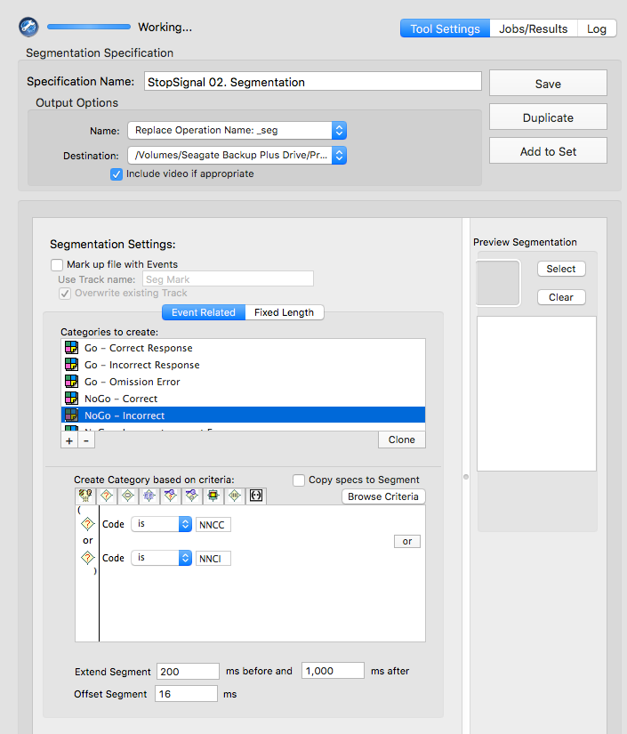

EEG and ERP Processing and Analysis
1 ERP Processing Pipeline using HAPPE
1.1 Inital Set-up
- Download MATLAB: https://its.uiowa.edu/matlab
- Click
How to Install MatLaband follow the relevant instructions - Create a
MatLabfolder in your local directory. You will keep all of your MatLab related files in this folder.
- Click
- Install the HAPPE pipeline: https://github.com/PINE-Lab/HAPPE
- Clone the HAPPE repository to your
GitHubaccount - Open the
HAPPEfolder - Open the
HAPPE User Guidedocument - Read through the
HAPPE User Guide - Navigate to the
Setting up HAPPEsection in the user guide and follow the instructions for setting up the HAPPE pipeline, including installation of add-ons and eeglab
- Clone the HAPPE repository to your
- Install EP Toolkit: https://sourceforge.net/projects/erppcatoolkit/
- After downloading, copy the
EP_Toolkitfolder to yourMatlabfolder (in your local directory) - In the
EP_toolkitfolder:- Open
EP_Toolkit - Open
Documentation - Open
tutorial
- Open
- In the
tutorialdocument, navigate to theSet Upsection and follow the instructions for installing and setting up EP Toolkit and FieldTrip. Do NOT follow instructions for setting up EEGLAB. You have already set up your path to EEGLAB when you set up the HAPPE pipeline. - You should have the following subfolders in your
MatLabfolder:EP_ToolkitFieldtrip-[version number]
- After downloading, copy the
1.2 MATLAB Scripts to Manage HAPPE Files
We have scripts for each task that can prepare files for the HAPPE Pipeline and/or manage the files outputted from HAPPE. These actions can be done manually as well, but the MATLAB scripts make the process more efficient. The scripts will also generate a “log” of all of the files processed through HAPPE to facilitate tracking of EEG data processing. The sections below detail the code used to perform these actions as well as the instructions for using the current scripts.
Note: Before using the scripts/code detailed below, ensure that all filepaths used are in your MATLAB path collection. These may include:
- The location where the automatic scripts are stored (for our lab,
this is under
/Data Processing/6. MATLAB EEG Pipeline) - The location where the HAPPE pre-processing script is stored
- The location of the raw data (to be processed)
- The location(s) of any intermediate files for processing (e.g., the updated .mff files that contain accuracy information in FishShark)
- The location(s) for any files outputted by HAPPE and/or places you wish to use the script to move them to
1.3 Oddball Processing Pipeline
1.3.1 MATLAB Script
The following section describes the MATLAB scripts used to manage HAPPE output files for the Oddball task data. If you are running HAPPE manually (i.e., without integrating these scripts), skip to the Oddball HAPPE inputs section.
- Open the
eegProccessingOddball.mfile (accessible via Git here) in MATLAB - Update all thresholds and filepaths in script file (must be done
BEFORE running the script)
- In the second section of our script file, we set our “threshold” for the minimum number of trials that need to be retained after pre-processing for a subject’s data to be eligible for PCA. Additional thresholds can also be set for things like number of channels retained, but these are not currently in use.
% Set quality threshold parameters trialCutoff = 10;- We also set environment variables with all of the filepaths that are
relevant for managing HAPPE output files and tracking processed data.
The following paths should be checked and updated as necessary to
reflect the organization of processing on your computer.
passPathis the location you wish to have files that meet or exceed the above-defined thresholds to be savedallPathis the location you wish to have ALL files outputted from HAPPE saved to (regardless of whether threshold is met or not)failPathis the location you wish to have files that do not meet the above-defined thresholds to be copied to- .mff files that do not meet threshold will be copied here as an indication that they should be processed manually to see if they meet threshold afterward
summPathis the location you wish to save the file that lists all files processed through HAPPE in the current batch- We currently use this to save the “processing log” to a location that all team members/computers have access to so it is easier to determine which files require processing when EEG data are not stored on a shared server
manPathis the location you wish to save the file that lists all files that do not meet the above-defined thresholds- We currently use this to save the “to process manually” list to a location that all team members/computers have access to so it is easier to determine which files require manual processing because the copied .mff file would not be acessible via our shared server
% Set paths for file sorting passPath = 'V:\Processing-Repo\Folder Structure\3 - Files for PCA'; %location for .txt output files allPath = 'V:\Processing-Repo\Folder Structure\2 - Processed Files'; %location for all processed files to end up failPath = 'V:\Processing-Repo\Folder Structure\1b - Manual Processing'; %location to copy unsuccessful .mff to for manual process % Set path for processing summary summPath = 'Z:\Shared Server\Study Folder\Data Processing\6. MATLAB EEG Pipeline\Processed Data Logs'; % Set path for summary of files to process manually manPath = 'Z:\Shared Server\Study Folder\Data Processing\6. MATLAB EEG Pipeline\Processing To Do\Cases to Process Manually\Lists of Cases by Batch'; - Run the HAPPE Pipeline
- This first section is designed to rely on user input. Click “Run” on the MATLAB editor window with the file open to begin the process.
- A message will appear in the console prompting you to enter the filepath to the location of the HAPPE pre-processing file you wish to run
- Once the path is entered, MATLAB will run the file
% Set path to HAPPE pre-processing script happeRun = input('Enter the full path to the HAPPE pre-processing file:\n> ','s') ; % Call and run HAPPE pre-processing script run(happeRun); - Enter HAPPE inputs
- See the following section for HAPPE user inputs for Oddball
After the HAPPE inputs are entered, no more user interaction is required for the script to do its job. The HAPPE pipeline will run, and the remaining MATLAB code in the script file will evaluate the files outputted by HAPPE and move them to the appropriate locations based on this evaluation. See Oddball Post-HAPPE Steps for a detailed explanation of the code used to accomplish this.
1.3.2 HAPPE Inputs
- If you are not using the MATLAB scripts described above, you must
first open the HAPPE pipeline V4 script in MATLAB and click “Run”
- This will be stored in the location to which you mapped the HAPPE
Git repo
(e.g.
Documents/GitHub/HAPPE/1. pre-process/HAPPE_v4.m)
- This will be stored in the location to which you mapped the HAPPE
Git repo
(e.g.
- User Inputs
- Enter the path to the folder containing the dataset.
- Select
raw - Load pre-existing set of input parameter:
Nif this is your first time running data through the pipeline.Yif you have decided on a set of parameters. Enter the path to the folder containing the input parameters.
- Low density data:
N - Data type:
task - Performing event-related potential (ERP) analysis:
Y - Enter the task onset tags
- Target:
tgt+ - Frequent:
frq+ done
- Target:
- Do multiple onset tags belong to a single condition?
N - File format:
5 - Acquisition layout type:
2 - Number of channels:
128 - Do you have additional type fields besides “code”?
N - Select channels of interest:
all - Frequency of electrical noise in Hz:
60 - Are there any additional frequencies, (e.g., harmonics) to reduce?
N - Line Noise reduction method:
notch- Low cutoff:
59 - high cutoff:
61
- Low cutoff:
- Resample:
N - Filter
- Low Pass Cutoff:
30 - High Pass Cutoff:
.1
- Low Pass Cutoff:
- Choose a filter:
fir - Bad Channel Detection:
Yafterwavelet thresholding
- ECGone:
N - Wavelet Thresholding
default- Threshold rule:
hard
- MuscIL:
N - Segmentation:
Y- Starting parameter for stimulus:
-200 - Ending parameter for stimulus:
1000 - Task offset:
2
- Starting parameter for stimulus:
- Baseline Correction:
Y- Baseline Correction start:
-200 - Baseline Correction end:
0
- Baseline Correction start:
- Interpolation:
Y - Segment Rejection:
Y- Segment Rejection Method:
amplitude- minimum segment rejection threshold:
-150 - maximum segment rejection threshold:
150 - segment rejection based on all channels or ROI:
all
- minimum segment rejection threshold:
- Segment Rejection Method:
- Re-referencing:
Y- Does your data contain a flatline or all zero reference channel?
N - re-referencing method:
average
- Does your data contain a flatline or all zero reference channel?
- Save format:
1 - Visualizations:
N - Parameter file save name:
default
1.3.3 Oddball Post-HAPPE Steps
This section details the actions performed by the MATLAB scripts once HAPPE is completed. These actions will take place automatically upon completion of the HAPPE pipeline. No user inputs or actions are necessary at this stage.
Exclude files that don’t have any output data from the dataset (containing filename and quality reports from HAPPE pipeline) that will be used to assess file quality
- This step is important because “empty” files don’t play nicely with the code used to evaluate files that have some data in them (even if the data do not meet threshold)
- This code relies on HAPPE’s quality data that remains in the MATLAB environment after the pipeline has finished.
% Create a list of files that received some kind of error message noTags = any(strcmp(dataQC, 'NO_TAGS'), 2); oneRej = any(strcmp(dataQC, 'REJ_ONE_SEG'), 2); allRej = any(strcmp(dataQC, 'ALL_SEG_REJ'), 2); error = any(strcmp(dataQC, 'ERROR'), 2); loadFail = any(strcmp(dataQC, 'LOAD_FAIL'), 2); % Combine filenames with quality data (for some reason, they are not automatically connected by HAPPE) dataQCNew = [FileNames', dataQC]; % Remove all files in the above lists (those receiving errors) from the quality data dataQCNew(noTags | allRej | error | loadFail | oneRej, :) = []; % Create list of variable names for quality data dataQCnamesNew = ["File", dataQCnames]; % Save the data as a table for ease of use in subsequent steps qcTable = cell2table(dataQCNew, 'VariableNames', dataQCnamesNew);Identify the files that meet (or don’t meet) the threshold
% Create a list of files (i.e., rows in the table) that meet threshold thresholdTest = qcTable.("Number_tgt+_Segs_Post-Seg_Rej") >= trialCutoff & qcTable.("Number_frq+_Segs_Post-Seg_Rej") >= trialCutoff; % Add a variable to the quality data table that include whether or not the file meet threshold qcTable.Test = thresholdTest;Add an identifying variable to be used for data joining down the line
- This variable is generated using its expected location in the file name (i.e., how many text characters “in” it is)
% Generate IDs based on File variable idWaveQC = extractBefore(qcTable.File, 8); % Append ID variable to quality data qcTable.idWave = idWaveQC;Create a subsetted dataset conataining only the
idWave, file name, and “test results” (i.e., whether a given file meets the specified cutoff threshold for inclusion) variables% Subset to ID and threshold information testInfo = qcTable(:, ["idWave", "File", "Test"]); fprintf('Assessment Complete \n');Generate a list of files outputted by HAPPE
% Generate path for HAPPE pre-processing output (using the HAPPE environment variable from user's input of location of raw data for processing) inputPath = strcat(srcDir, "\5 - processed"); % Read in list of files outputted from HAPPE preprocessingOutput = dir(inputPath); % Remove "empty" rows preprocessingOutput = preprocessingOutput(~ismember({preprocessingOutput.name}, {'.', '..'})); % Save data as a table for ease of later use preprocessingOutput = struct2table(preprocessingOutput); % Subset to file info fileInfo = preprocessingOutput(:, ["name", "folder"]);Select only desired files to be moved/copied
- Currently, we don’t do anything with the “Individual Trial” files outputted by HAPPE. These files are quite large and take a long time to move, so it is more efficient to just remove them from the list of filenames and not worry about moving them anywhere.
% Subset to desired files (AveOverTrial) fileSubset = fileInfo(contains(fileInfo.name, "AveOverTrials"), :);Add condition, ID, and threshold-related variables to the file data
- NOTE: The value for
Conditionvariable (i.e., “Target” or “Frequent”) should match the name of the condition-specific folders you wish the files to save to within the processing repo.
% Generate list of IDs based on file name variable idWaveFS = extractBefore(fileSubset.name, 8); % Add ID list to file data fileSubset.idWave = idWaveFS; % Generate list of files belonging to each condition based on file name variable target = contains(fileSubset.name, "tgt+"); frequent = contains(fileSubset.name, "frq+"); % Create empty variable for condition fileSubset.cond = cell(size(fileSubset, 1), 1); % Fill in condition variable based on the lists generated above fileSubset.cond(target) = {'Target'}; fileSubset.cond(frequent) = {'Frequent'}; fileSubset.cond(~target & ~frequent) = {'All'}; % Join threshold test information fileTest = join(fileSubset, testInfo);- NOTE: The value for
Prepare data table with information about files that met the threshold
- The data generated here are preparing to copy the .txt files outputted by HAPPE into a folder containing all files that are suitable for PCA
% Create a separate table for only files that meet threshold movingInfo = fileTest(fileTest.Test, :); % Create empty columns for filepath variables movingInfo.destination = cell(size(movingInfo, 1), 1); movingInfo.origin = cell(size(movingInfo, 1), 1); movingInfo.processedTo = cell(size(movingInfo, 1), 1); movingInfo.processedFrom = cell(size(movingInfo, 1), 1); % Generate file paths based on condition movingInfo.destination = strcat({passPath}, "\", movingInfo.cond, "\", movingInfo.name); movingInfo.origin = strcat(movingInfo.folder, "\", movingInfo.name); movingInfo.processedTo = strcat({allPath}, "\", movingInfo.name); movingInfo.processedFrom = strcat(movingInfo.folder, "\", movingInfo.name);Prepare data table with information about files that do NOT meet the threshold
- The data generated here are preparing to copy .mff files from the location of the raw files into a folder indicating the need for manual processing
% Create a separate table for only files that did not meet threshold failFiles = fileTest(~fileTest.Test, ["File", "folder", "name"]); % Create empty columns for filepath variables failFiles.destination = cell(size(failFiles, 1), 1); failFiles.origin = cell(size(failFiles, 1), 1); failFiles.processedTo = cell(size(failFiles, 1), 1); failFiles.processedFrom = cell(size(failFiles, 1), 1); % Generate filepaths based on ID and task failFiles.destination = strcat({failPath}, "\", failFiles.File); failFiles.origin = strcat({srcDir}, "\", failFiles.File); failFiles.processedFrom = strcat(failFiles.folder, "\", failFiles.name); failFiles.processedTo = strcat({allPath}, "\", failFiles.name);Generate environment variables that correspond to the column index of relevant variables for file sorting
- Note that the very last line of this code defines the varaible(s) to exclude from the HAPPE outputted files. This variable must be stripped from the data before saving them, because the presence of the extra variable makes the file incompatible with EP Toolkit’s PCA process.
% Define column locations for each filepath variable % For files that meet threshold: toCol = find(strcmp(movingInfo.Properties.VariableNames, "destination")); fromCol = find(strcmp(movingInfo.Properties.VariableNames, "origin")); procColto = find(strcmp(movingInfo.Properties.VariableNames, "processedTo")); procColfrom = find(strcmp(movingInfo.Properties.VariableNames, "processedFrom")); % For files that do not meet threshold rawCol = find(strcmp(failFiles.Properties.VariableNames, "origin")); manCol = find(strcmp(failFiles.Properties.VariableNames, "destination")); failProcColto = find(strcmp(failFiles.Properties.VariableNames, "processedTo")); failProcColFrom = find(strcmp(failFiles.Properties.VariableNames, "processedFrom")); % Define variable to exclude extraVar = 'Time';Use a loop to process all files that met threshold
- For each row in the “movingInfo” dataset, the loop will:
- Identify the origin and destination paths
- Read in the HAPPE output file
- Remove the extra variable
- Save the “cleaned” data in the appropriate folder (without variable names, as required by EP Toolkit)
for row = 1:height(movingInfo) % Specify path info pathFrom = movingInfo{row, fromCol}; pathTo = movingInfo{row, toCol}; % Read in the data rawTable = readtable(pathFrom); % Remove extra column (Time) cleanTable = rawTable{:, ~strcmp(rawTable.Properties.VariableNames, extraVar)}; % Save without headers writematrix(cleanTable, pathTo, 'Delimiter', '\t') end- For each row in the “movingInfo” dataset, the loop will:
Use a loop to copy raw (.mff) files into a location that stores files requiring manual processing
for row = 1:height(failFiles) % Specify path info pathFrom = failFiles{row, rawCol}; pathTo = failFiles{row, manCol}; % Copy file copyfile(pathFrom, pathTo) endUse a set of loops to copy all HAPPE output files into a folder intended to house all output (whether threshold is met or not)
for row = 1:height(movingInfo) % Specify path info pathFrom = movingInfo{row, procColfrom}; pathTo = movingInfo{row, procColto}; % Copy file copyfile(pathFrom, pathTo); end for row = 1:height(failFiles) % Specify path info pathFrom = failFiles{row, failProcColFrom}; pathTo = failFiles{row, failProcColto}; % Copy file copyfile(pathFrom, pathTo); endGenerate a .txt file listing all processed .mff files
- This file will contain a list of all raw files (e.g.,
1111_22_oddball.mff) and save the list to the specified location (summPath) - The file will have the current date and time appended to the end so that it will be distinguishable from past logs
- The list of processed files is generated using an environment object
(
FileNames) that the HAPPE pipeline creates that lists all files inputted to the pipeline
% Create a table from HAPPE FileNames cell array processedList = cell2table(FileNames(:)); % Rename file variable from default processedList = renamevars(processedList, {'Var1'}, {'File'}); % Save current date as a string variable today = string(date()); % Save time as a string variable, replacing ":" with "_" so that file can be written time = strrep(datestr(now, 'HH:MM:SS:FFF'), ':', "_"); % Generate file name to include current date and time listFile = strcat("\oddballProcessed_", today, "_", time); % Generate full path including file name summPathFull = strcat(summPath, listFile); % Write table to specified location writetable(processedList, summPathFull);- This file will contain a list of all raw files (e.g.,
Generate a .txt file listing all of the files that did not meet threshold to go through subsequent processing
- This file will contain a list of all raw files (e.g.,
1111_22_oddball.mff) that did not meet threshold and save the list to the specified location (manPath) - The file will have the current date and time appended to the end so that it will be distinguishable from past lists
- This list of file to process manually is generated using the
environment object
FileNamesthat HAPPE creates; any files listed inFileNamesbut not in the dataset of files that pass threshold make up themanualList
% Compare movingInfo with FileNames to isolate files that don't meet threshold manualList = cell2table(FileNames(~ismember(FileNames', movingInfo.File))); manualList = renamevars(manualList, {'Var1'}, {'File'}); % Generate file name to include current date manFile = strcat("\oddballManual_", today, "_", time); % Generate full path including filename manPathFull = strcat(manPath, manFile); % Write table to specified location writetable(manualList, manPathFull);- This file will contain a list of all raw files (e.g.,
1.4 FishShark Processing Pipeline
1.4.1 MATLAB Script
The following section describes the MATLAB scripts used to manage HAPPE input and output files for the FishShark task data. If you are running HAPPE manually (i.e., without integrating these scripts), skip to the FishShark HAPPE inputs section.
The first two steps described in this section are the same as those described for Oddball processing. Processing actions specific to FishSharks task begin in Step 3.
- Open the
eegProccessingFishshark.mfile (accessible via Git here) in MATLAB - Update all thresholds and filepaths in script file (must be done
BEFORE running the script)
- In the fifth section of our script file, we set our “threshold” for the minimum number of trials that need to be retained after pre-processing for a subject’s data to be eligible for PCA. Additional thresholds can also be set for things like number of channels retained, but these are not currently in use.
- Note that setting these parameters occurs later in the FishSharks script than the one for Oddball; this is because FishSharks files require additional processing before they are ready for HAPPE (see step 3 for details)
% Set quality threshold parameters trialCutoff = 10;- We also set environment variables with all of the filepaths that are
relevant for managing HAPPE output files and tracking processed data.
The following paths should be checked and updated as necessary to
reflect the organization of processing on your computer.
passPathis the location you wish to have files that meet or exceed the above-defined thresholds to be savedallPathis the location you wish to have ALL files outputted from HAPPE saved to (regardless of whether threshold is met or not)failPathis the location you wish to have files that do not meet the above-defined thresholds to be copied to- .mff files that do not meet threshold will be copied here as an indication that they should be processed manually to see if they meet threshold afterward
summPathis the location you wish to save the file that lists all files processed through HAPPE in the current batch- We currently use this to save the “processing log” to a location that all team members/computers have access to so it is easier to determine which files require processing when EEG data are not stored on a shared server
manPathis the location you wish to save the file that lists all files that do not meet the above-defined thresholds- We currently use this to save the “to process manually” list to a location that all team members/computers have access to so it is easier to determine which files require manual processing because the copied .mff file would not be acessible via our shared server
% Set paths for file sorting passPath = 'V:\Processing-Repo\Folder Structure\3 - Files for PCA'; %location for .txt output files allPath = 'V:\Processing-Repo\Folder Structure\2 - Processed Files'; %location for all processed files to end up failPath = 'V:\Processing-Repo\Folder Structure\1b - Manual Processing'; %location to copy unsuccessful .mff to for manual process % Set path for processing summary summPath = 'Z:\Shared Server\Study Folder\Data Processing\6. MATLAB EEG Pipeline\Processed Data Logs'; % Set path for summary of files to process manually manPath = 'Z:\Shared Server\Study Folder\Data Processing\6. MATLAB EEG Pipeline\Processing To Do\Cases to Process Manually\Lists of Cases by Batch'; - Update raw (.mff) files’ condition tags with accuracy information
- Unlike the Passive Oddball task, FishSharks trials can be either correct or incorrect. Whether or not a trial was “responded to” correctly is relevant to the nature of the extracted ERP. Because the event tags in our .mff files do not inherently contain information about whether each trial was responded to correctly, we need to add it ourselves. This process can be done manually in NetStation, but it can also be automated using the MATLAB code detailed below.
- NOTE: This code requires eeglab. Before running the code,
open eeglab in your MATLAB session by typing
eeglabinto the console. You can close it as soon as it opens, but this step ensures that eeglab is loaded into your current session and helps prevent the subsequent code from erroring out.
Set the filepaths for raw and updated .mff files
- This section is set to rely on user inputs. Click “Run” in the MATLAB editor to start the processing.
- A message will appear in the console prompting you to enter two filepaths: the first is the location of the raw .mff files, and the second is the location you would like the updated files to save in.
% User input for location of raw files pathRaw = input('Enter the full path to the folder containing the raw files:\n> ','s'); % User input for destination of subsetted files pathSub = input('Enter the full path to the folder in which to save the updated files:\n> ','s');At this point, there will be no user input/actions necessary until all of the .mff files in the
pathRawdirectory have been updated and saved into thepathSubdirectory. The code that asks the user for the path to HAPPE will run when that process has finished. The following section will describe the code used to automate the process of updating .mff event tags to include accuracy information at the trial level. Move on to Step 4 (Run the HAPPE Pipeline) when the process has completed.Gather and manage information from the directory housing the raw (.mff) files
% Have MATLAB gather a list of raw files housed in specified location (pathRaw) dirInfo = struct2table(dir(pathRaw)); % Remove blank rows noName = strcmp(dirInfo.name, '.') | strcmp(dirInfo.name, '..'); dirInfo(noName, :) = [];Generate variables necessary for managing raw and updated files
- This code will generate the full filepaths (including file name) necessary for reading in each .mff file and saving its updated counterpart
- It will also generate an ID variable for joining purposes based on the expected location of the subject name in the name of each file
% Generate ID variable dataFiles = dirInfo(:, "name"); % Add ID variable to file data dataFiles.ID = extractBefore(dataFiles.name, 8); % Generate path to read raw data rawPaths = dataFiles; rawPaths.path = strcat({pathRaw}, "/", dirInfo.name); rawPaths = rawPaths(:, ["ID", "path"]); % Generate path to save updated versions of the data (containing accuracy info at trial level) subPaths = dataFiles; subPaths.path = strcat({pathSub}, "/", subPaths.ID, "_sub_fishshark.mff"); subPaths = subPaths(:, ["ID", "path"]); % Join filepath datatables mergePaths = join(rawPaths, subPaths, 'Keys', {'ID'})Use a loop to update the event tags in each .mff file to reflect accuracy of response
- For every file included in the
mergePathsdataset, MATLAB will perform the following actions:- Set environment variables representing the path to read in the original .mff file and save its updated counterpart (updates with each iteration of the loop)
- Read in the .mff file
- Extract the “event” information from the .mff file
- Evaluate whether there is usable data in the file
- This step prevents the code from erroring out if a subject did not make it past the practice trials
- If the evaluation determines that there is NOT usable data in the present file, the loop will jump to the next file
- Create a table containing response information (response vs no response and reaction time) and condition information (go vs no-go) at the trial level
- Evaluate each trial to determine whether the response was correct or
incorrect
- For No-Go trials, responses are CORRECT if there was no response (incorrect if subject did respond)
- For Go trials, responses are CORRECT if there was a response AND subject’s reaction time was at least 200 ms (incorrect if subject did not respond OR if subject responded too quickly for response to be considered “valid”)
- Update the event tags in the .mff file to contain a “c” for correct
trials and an “x” for incorrect trials
- The c/x indicator will be appended to the front of the existing
event tag (e.g.,
Go++will becomecGo++)
- The c/x indicator will be appended to the front of the existing
event tag (e.g.,
- Export an updated version of the .mff file with accuracy information
to the specified location (
pathSub)
- Correct row order can be achieved in .mff filetypes by sorting
according to either the
latencycolumn or theureventcolumn (as shown below)
for row = 1:height(mergePaths) % Specify paths rawFolder = mergePaths{row, "path_rawPaths"} subFolder = mergePaths{row, "path_subPaths"} % Read in EEG data EEGraw = pop_mffimport(char(rawFolder), 'code') % Create table from "event" field of raw data EEGevent = struct2table(EEGraw.event) % Check for the existence of usable rows checkVars = strcmp(EEGevent.Properties.VariableNames, 'mffkey_cel') % Skip files without necessary variables if max(checkVars) == 0 continue end % Create table without practice/training trials keepRows = strcmp(EEGevent.mffkey_cel, '4') EEGsub = EEGevent(keepRows, :) % Check for the existence of usable rows checkRows = max(keepRows) % Skip files with no usable rows if checkRows == 0 continue end % Get response info at trial level EEGresp = table(EEGsub.mffkey_obs, EEGsub.mffkey_eval, EEGsub.mffkey_rtim) EEGresp = rmmissing(EEGresp) EEGresp = renamevars(EEGresp, ["Var1", "Var2", "Var3"], ["Trial", "Eval", "RTime"]) % Get condition info at trial level EEGconds = table(EEGsub.mffkey_obs, EEGsub.type) EEGconds = renamevars(EEGconds, ["Var1", "Var2"], ["Trial", "Cond"]) keepConds = strcmp(EEGconds.Cond, 'Go++') | strcmp(EEGconds.Cond, 'NG++') EEGcond = EEGconds(keepConds, :) % Merge datasets EEGtrials = join(EEGcond, EEGresp) EEGtrials.RTime = cellfun(@str2num, EEGtrials.RTime) % Evaluate trials for correct-ness of response correct = strcmp(EEGtrials.Cond, 'Go++') & strcmp(EEGtrials.Eval, '1') & EEGtrials.RTime > 200 | strcmp(EEGtrials.Cond, 'NG++') & strcmp(EEGtrials.Eval, '0') EEGtrials.Acc = correct % Create new code tags including accuracy information EEGtrials.newCode(EEGtrials.Acc & strcmp(EEGtrials.Cond, 'Go++')) = {'cGo++'} EEGtrials.newCode(~EEGtrials.Acc & strcmp(EEGtrials.Cond, 'Go++')) = {'xGo++'} EEGtrials.newCode(EEGtrials.Acc & strcmp(EEGtrials.Cond, 'NG++')) = {'cNG++'} EEGtrials.newCode(~EEGtrials.Acc & strcmp(EEGtrials.Cond, 'NG++')) = {'xNG++'} % Subset information for merge EEGmerge = EEGtrials(:, {'Trial', 'Cond', 'newCode'}) % Prep key in original data EEGevent.key = strcat(EEGevent.mffkey_obs, EEGevent.type) % Prep key in merge data EEGmerge.key = strcat(EEGmerge.Trial, EEGmerge.Cond) EEGmerge = EEGmerge(:, {'key', 'newCode'}) % Merge new codes with event table EEGnew = outerjoin(EEGevent, EEGmerge) % Replace codes where new code is needed EEGnew.code(~strcmp(EEGnew.newCode, '')) = EEGnew.newCode(~strcmp(EEGnew.newCode, '')) EEGnew.type(~strcmp(EEGnew.newCode, '')) = EEGnew.newCode(~strcmp(EEGnew.newCode, '')) % Arrange table in order of event (CRUCIAL for correct export) EEGnew = sortrows(EEGnew, 'urevent') % Convert table back to struct and restore original dimensions EEGnew = table2struct(EEGnew(:, 1:29)) EEGnew = reshape(EEGnew, [1, height(EEGnew)]) % Replace event table(s) in original struct EEGraw.event = EEGnew EEGraw.urevent = table2struct(struct2table(EEGnew(:, 1:28))) % Export updated file pop_mffexport(EEGraw, char(subFolder)) end- For every file included in the
- Run the HAPPE Pipeline
- This section is designed to rely on user input.
- When the prior steps have finsihed, a message will appear in the console prompting you to enter the filepath to the location of the HAPPE pre-processing file you wish to run
- Once the path is entered, MATLAB will run the file
% Set path to HAPPE pre-processing script happeRun = input('Enter the full path to the HAPPE pre-processing file:\n> ','s') ; % Call and run HAPPE pre-processing script run(happeRun); - Enter HAPPE inputs
- See the following section for HAPPE inputs for the Fish/Shark task
After the HAPPE inputs are entered, no more user interaction is required for the script to do its job. The HAPPE pipeline will run, and the remaining MATLAB code in the script file will evaluate the files outputted by HAPPE and move them to the appropriate locations based on this evaluation. See FishShark Post-HAPPE Steps for a detailed explanation of the code used to accomplish this.
1.4.2 HAPPE Inputs
- If you are not using the MATLAB scripts described above, you must
first open the HAPPE pipeline V4 script in MATLAB and click “Run”
- This will be stored in the location to which you mapped the HAPPE
Git repo
(e.g.
Documents/GitHub/HAPPE/1. pre-process/HAPPE_v4.m)
- This will be stored in the location to which you mapped the HAPPE
Git repo
(e.g.
- User Inputs
- Enter the path to the folder containing the dataset.
- Select
raw - Load pre-existing set of input parameter:
Nif this is your first time running data through the pipeline.Yif you have decided on a set of parameters. Enter the path to the folder containing the input parameters.
- Low density data:
N - Data type:
task - Performing event-related potential (ERP) analysis:
Y - Enter the task onset tags
- Correct Go:
cGo++ - Incorrect Go:
xGo++ - Correct NoGo:
cNG++ - Incorrect NoGo:
xNG++ done
- Correct Go:
- Do multiple onset tags belong to a single condition?
N - File format:
5 - Acquisition layout type:
2 - Number of channels:
128 - Do you have additional type fields besides “code”?
N - Select channels of interest:
all - Frequency of electrical noice in Hz:
60 - Are there any additional frequencies, (e.g., harmonics) to reduce?
N - Line Noise reduction method:
notch- Low cutoff:
59 - high cutoff:
61
- Low cutoff:
- Resample:
N - Filter
- Low Pass Cutoff:
30 - High Pass Cutoff:
.1
- Low Pass Cutoff:
- Choose a filter:
fir - Bad Channel Detection:
Yafterwavelet thresholding
- ECGone:
N - Wavelet Thresholding
default- Threshold rule:
hard
- MuscIL:
N - Segmentation:
Y- Starting parameter for stimulus:
-200 - Ending parameter for stimulus:
1000 - Task offset:
17
- Starting parameter for stimulus:
- Baseline Correction:
Y- Baseline Correction start:
-200 - Baseline Correction end:
0
- Baseline Correction start:
- Interpolation:
Y - Segment Rejection:
Y- Segment Rejection Method:
amplitude- minimum segment rejection threshold:
-150 - maximum segment rejection threshold:
150 - segment rejection based on all channels or ROI:
all
- minimum segment rejection threshold:
- Segment Rejection Method:
- Re-referencing:
Y- Does your data contain a flatline or all zero reference channel?
N - re-referencing method:
average
- Does your data contain a flatline or all zero reference channel?
- Save format:
1 - Visualizations:
N - Parameter file save name:
default
1.4.3 FishShark Post-HAPPE Steps
This section details the actions performed by the MATLAB scripts once HAPPE is completed. These actions will take place automatically upon completion of the HAPPE pipeline. No user inputs or actions are necessary at this stage.
Exclude files that don’t have any output data from the dataset (containing filename and quality reports from HAPPE pipeline) that will be used to assess file quality
- This step is important because “empty” files don’t play nicely with the code used to evaluate files that have some data in them (even if the data do not meet threshold)
- This code relies on HAPPE’s quality data that remains in the MATLAB environment after the pipeline has finished.
% Create a list of files that received some kind of error message noTags = any(strcmp(dataQC, 'NO_TAGS'), 2); allRej = any(strcmp(dataQC, 'ALL_SEG_REJ'), 2); oneRej = any(strcmp(dataQC, 'REJ_ONE_SEG'), 2); error = any(strcmp(dataQC, 'ERROR'), 2); loadFail = any(strcmp(dataQC, 'LOAD_FAIL'), 2); % Combine filenames with quality data (for some reason, they are not automatically connected by HAPPE) dataQCNew = [FileNames', dataQC]; % Remove all files in the above lists (those receiving errors) from the quality data dataQCNew(noTags | allRej | error | loadFail | oneRej, :) = []; % Create list of variable names for quality data dataQCnamesNew = ["File", dataQCnames]; % Save the data as a table for ease of use in subsequent steps qcTable = cell2table(dataQCNew, 'VariableNames', dataQCnamesNew); % Subset to ID and threshold information testInfo = qcTable(:, ["idWave", "File", "Test"]);Identify the files that meet (or don’t meet) the threshold
% Create a list of files (i.e., rows in the table) that meet threshold thresholdTest = qcTable.("Number_cNG++_Segs_Post-Seg_Rej") >= trialCutoff & qcTable.("Number_cGo++_Segs_Post-Seg_Rej") >= trialCutoff; % Add a variable to the quality data table that include whether or not the file meet threshold qcTable.Test = thresholdTest;Add an identifying variable to be used for data joining down the line
- This variable is generated using its expected location in the file name (i.e., how many text characters “in” it is)
% Generate IDs based on File variable idWaveQC = extractBefore(qcTable.File, 8); % Append ID variable to quality data qcTable.idWave = idWaveQC;Create a subsetted dataset conataining only the
idWave, file name, and “test” results (i.e., whether a given file meets the specified cutoff threshold for inclusion)% Subset to ID and threshold information testInfo = qcTable(:, ["idWave", "File", "Test"]); fprintf('Assessment Complete \n');Generate a list of files outputted by HAPPE
% Generate path for HAPPE pre-processing output (using the HAPPE environment variable from user's input of location of raw data for processing) inputPath = strcat(srcDir, "\5 - processed"); % Read in list of files outputted from HAPPE preprocessingOutput = dir(inputPath); % Remove "empty" rows preprocessingOutput = preprocessingOutput(~ismember({preprocessingOutput.name}, {'.', '..'})); % Save data as a table for ease of later use preprocessingOutput = struct2table(preprocessingOutput); % Subset to file info fileInfo = preprocessingOutput(:, ["name", "folder"]);Select only desired files to be moved/copied
- Currently, we don’t do anything with the “Individual Trial” files outputted by HAPPE. These files are quite large and take a long time to move, so it is more efficient to just remove them from the list of filenames and not worry about moving them anywhere.
% Subset to desired files (AveOverTrial) fileSubset = fileInfo(contains(fileInfo.name, "AveOverTrials"), :);Add condition, ID, and threshold-related variables to the file data
- NOTE: The value for
Conditionvariable (i.e., “cGo” or “cNoGo”) should match the name of the condition-specific folders you wish the files to save to within the processing repo.
% Generate list of IDs based on file name variable idWaveFS = extractBefore(fileSubset.name, 8); % Add ID list to file data fileSubset.idWave = idWaveFS; % Generate list of files belonging to each condition based on file name variable cGo = contains(fileSubset.name, "cGo++"); cNoGo = contains(fileSubset.name, "cNG++"); xGo = contains(fileSubset.name, "xGo++"); xNoGo = contains(fileSubset.name, "xNG++"); % Create empty variable for condition fileSubset.cond = cell(size(fileSubset, 1), 1); % Fill in condition variable based on the lists generated above fileSubset.cond(cGo) = {'cGo'}; fileSubset.cond(cNoGo) = {'cNoGo'}; fileSubset.cond(xGo) = {'xGo'}; fileSubset.cond(xNoGo) = {'xNoGo'}; fileSubset.cond(~cGo & ~cNoGo & ~xGo & ~xNoGo) = {'All'}; % Join threshold test information fileTest = join(fileSubset, testInfo);- NOTE: The value for
Prepare data table with information about files that met the threshold
- The data generated here are preparing to copy the .txt files outputted by HAPPE into a folder containing all files that are suitable for PCA
% Create a separate table for only files that meet threshold movingInfo = fileTest(fileTest.Test, :); % Create empty columns for filepath variables movingInfo.destination = cell(size(movingInfo, 1), 1); movingInfo.origin = cell(size(movingInfo, 1), 1); movingInfo.processedTo = cell(size(movingInfo, 1), 1); movingInfo.processedFrom = cell(size(movingInfo, 1), 1); % Generate file paths based on condition movingInfo.destination = strcat({passPath}, "\", movingInfo.cond, "\", movingInfo.name); movingInfo.origin = strcat(movingInfo.folder, "\", movingInfo.name); movingInfo.processedTo = strcat({allPath}, "\", movingInfo.name); movingInfo.processedFrom = strcat(movingInfo.folder, "\", movingInfo.name);Prepare data table with information about files that do NOT meet the threshold
- The data generated here are preparing to copy .mff files from the location of the raw files into a folder indicating the need for manual processing
% Create a separate table for only files that did not meet threshold failFiles = fileTest(~fileTest.Test, ["File", "folder", "name"]); % Create empty columns for filepath variables failFiles.destination = cell(size(failFiles, 1), 1); failFiles.origin = cell(size(failFiles, 1), 1); failFiles.processedTo = cell(size(failFiles, 1), 1); failFiles.processedFrom = cell(size(failFiles, 1), 1); % Generate filepaths based on ID and task failFiles.destination = strcat({failPath}, "\", failFiles.File); failFiles.origin = strcat({srcDir}, "\", failFiles.File); failFiles.processedFrom = strcat(failFiles.folder, "\", failFiles.name); failFiles.processedTo = strcat({allPath}, "\", failFiles.name);Generate environment variables that correspond to the column index of relevant variables for file sorting
- Note that the very last line of this code defines the varaible(s) to exclude from the HAPPE outputted files. This variable must be stripped from the data before saving them, because the presence of the extra variable makes the file incompatible with EP Toolkit’s PCA process.
% Define column locations for each filepath variable % For files that meet threshold: toCol = find(strcmp(movingInfo.Properties.VariableNames, "destination")); fromCol = find(strcmp(movingInfo.Properties.VariableNames, "origin")); procColto = find(strcmp(movingInfo.Properties.VariableNames, "processedTo")); procColfrom = find(strcmp(movingInfo.Properties.VariableNames, "processedFrom")); % For files that do not meet threshold rawCol = find(strcmp(failFiles.Properties.VariableNames, "origin")); manCol = find(strcmp(failFiles.Properties.VariableNames, "destination")); failProcColto = find(strcmp(failFiles.Properties.VariableNames, "processedTo")); failProcColFrom = find(strcmp(failFiles.Properties.VariableNames, "processedFrom")); % Define variable to exclude extraVar = 'Time';Use a loop to process all files that met threshold
- For each row in the “movingInfo” dataset, the loop will:
- Identify the origin and destination paths
- Read in the HAPPE output file
- Remove the extra variable
- Save the “cleaned” data in the appropriate folder (without variable names, as required by EP Toolkit)
for row = 1:height(movingInfo) % Specify path info pathFrom = movingInfo{row, fromCol}; pathTo = movingInfo{row, toCol}; % Read in the data rawTable = readtable(pathFrom); % Remove extra column (Time) cleanTable = rawTable{:, ~strcmp(rawTable.Properties.VariableNames, extraVar)}; % Save without headers writematrix(cleanTable, pathTo, 'Delimiter', '\t') end- For each row in the “movingInfo” dataset, the loop will:
Use a loop to copy raw (.mff) files into a location that stores files requiring manual processing
for row = 1:height(failFiles) % Specify path info pathFrom = failFiles{row, rawCol}; pathTo = failFiles{row, manCol}; % Copy file copyfile(pathFrom, pathTo) endUse a set of loops to copy all HAPPE output files into a folder intended to house all output (whether threshold is met or not)
for row = 1:height(movingInfo) % Specify path info pathFrom = movingInfo{row, procColfrom}; pathTo = movingInfo{row, procColto}; % Copy file copyfile(pathFrom, pathTo); end for row = 1:height(failFiles) % Specify path info pathFrom = failFiles{row, failProcColFrom}; pathTo = failFiles{row, failProcColto}; % Copy file copyfile(pathFrom, pathTo); endGenerate a .txt file listing all processed .mff files
- This file will contain a list of all raw files (e.g.,
1111_22_fishshark.mff) and save the list to the specified location (summPath) - The file will have the current date and time appended to the end so that it will be distinguishable from past logs
- The list of processed files is generated using an environment variable that the HAPPE pipeline creates that lists all files inputted to the pipeline
% Create a table from HAPPE FileNames cell array processedList = cell2table(FileNames(:)); % Rename file variable from default processedList = renamevars(processedList, {'Var1'}, {'File'}); % Save current date as a string variable today = string(date()); % Save time as a string variable, replacing ":" with "_" so that file can be written time = strrep(datestr(now, 'HH:MM:SS:FFF'), ':', "_"); % Generate file name to include current date and time listFile = strcat("\oddballProcessed_", today, "_", time); % Generate full path including file name summPathFull = strcat(summPath, listFile); % Write table to specified location writetable(processedList, summPathFull);- This file will contain a list of all raw files (e.g.,
Generate a .txt file listing all of the files that did not meet threshold to go through subsequent processing
- This file will contain a list of all raw files (e.g.,
1111_22_fishshark.mff) that did not meet threshold and save the list to the specified location (manPath) - The file will have the current date and time appended to the end so that it will be distinguishable from past lists
- This list of file to process manually is generated using the
environment object
FileNamesthat HAPPE creates; any files listed inFileNamesbut not in the dataset of files that pass threshold make up themanualList
% Compare movingInfo with FileNames to isolate files that don't meet threshold manualList = cell2table(FileNames(~ismember(FileNames', movingInfo.File))); manualList = renamevars(manualList, {'Var1'}, {'File'}); % Generate file name to include current date manFile = strcat("\fishSharkManual_", today, "_", time); % Generate full path including filename manPathFull = strcat(manPath, manFile); % Write table to specified location writetable(manualList, manPathFull);- This file will contain a list of all raw files (e.g.,
1.5 Stop-Signal Processing Pipeline
2 ERP PCA (EP) Toolkit
2.1 Reading Text Files into EP Toolkit
- Open MATLAB with “Run as Administrator”
- Open ERP PCA Toolkit in MATLAB
- Type
epin command prompt
- Type
- Click
Readto import files - Use the following options
- Format =
text (.txt) - Type =
average - Mont =
Adult Hydrocel 128-channel 1.0
- Format =
- Select
Single File Mode.- Single file mode will use the filename to assign the task condition
and participant ID for each file. Thus, it is critical to use a
standard naming convention to name the files.
- For example, an oddball file could be named:
1001_36_oddball_processed_AveOverTrials_tgt+.txt - A FishSharks file meanwhile could be named:
1004_36_oddball_processed_AveOverTrials_cGo++.txt - Note: The filename examples above reflect the automated naming convention of the files outputted by the HAPPE pipeline. If another processing pipeline is used or if the naming conventions become unstandardized, it is crucial that standardization of filenames is implemented
- For example, an oddball file could be named:
- Single file mode will use the filename to assign the task condition
and participant ID for each file. Thus, it is critical to use a
standard naming convention to name the files.
- In the
Single File Modemenu use theSubjectfield to denote which characters in the filename name will determine the participant ID.- For the above example
1:7would correspond to1001_36in a file called1001_36_oddball_processed_AveOverTrials_tgt+.txt(outputted by HAPPE)
- For the above example
- Next, In the
Single File Modemenu use theCellfield to denote which characters in the file name will determine the task condition.- For the below example
41:43would correspond tofrqortgtin a file called1001_36_oddball_processed_AveOverTrials_tgt+.txt - For FishSharks files, it might be
47:49that correspond tocgoorcng. 
- For the below example
- Select
Read. You will be asked to name the aggregate file created by importing and combining the single files. Use the convention “task_condition_age” to name the file (e.g.,ob_tgt_54) - A new window will open prompting you to select the files you wish to
import. Navigate to the folder housing the data to be imported (e.g.,
3 - Files for PCA\Target) and useCtrl + Ato select all files in that folder. ClickOpenonce all desired files are selected - Select the
2_9AverageNet128.cedfile when prompted by another popup. This file corresponds to the electrode template associated with the participant age range and type of net represented in the data- For our study using a 128-channel net on children aged 3-7, the
2_9AverageNet128.cedtemplate is most appropriate
- For our study using a 128-channel net on children aged 3-7, the
- The new file will have the participant ID and will combine the
conditions for each participant.
- Subject Names:
- Task Conditions

2.2 Update File with Experiment Information
- Go to
Mainand clickEdit - Click on the file you imported
- In
Overview, add the following information:- Experiment Name:
Oddball,FishShark, orStopSignal - Reference Type: change to
average reference - Prestimulus period: change to
200 - Nominal sampling rate: change to
1000
- Experiment Name:
- Click
Done - Go to
Mainand clickSave- Save the combined file as an
.eptfile in the4-EPT Averagesfolder using the following naming convention: “task_condition_age”. For example, if you were working on the target condition of oddball for all age groups, you would save the file asob_tgt_all
- Save the combined file as an
2.3 Generating Grand Average Waveforms
- If the EPT average file (e.g.,
ob_tgt_all) is not already in the working environment, read it in using the steps below- Go to
Read - Format =
EP (.ept) - Click
Read - Navigate to the
4 - EPT Averagesfolder and select desired file(s) - Click
Openin the browser window to read the file(s) - Click
Mainto return to main menu
- Go to
- Select
Edit - When the editor window opens, navigate to the
Subjectspane - Select
Allfrom among the many options along the lefthand pane of the editor- This will select all of the subjects included in the file and assign them a weight of 1
- Confirm that all subjects have been selected (look for a checked box in the subject row) and that all weights have been set to 1
- Click
Add - A new “subject” should have now been added to the bottom of the
subjects list
- This subject is called
gaveand represents the grand average across all subjects
- This subject is called
- Click
Doneto exit the editor window, thenMainto return to the EP Toolkit home
2.4 Temporal PCA
- Go to
Mainand clickPCA - Input the following:
- Mode:
temporal - Rotation:
promax - Factors:
0 - Title: tPCA_experimentname (example:
tPCA_ob_tgt_all)
- Mode:
- Click the appropriate file (e.g.,
ob_tgt_all) - Determine how many factors to retain using the scree plot (keep the number of factors where the blue line is above the red line)
- Determine the percent variance accounted for by the number of factors retained by changing the “minimum % age accounted for criterion”. Record the number of factors retained and % variance accounted for by that number of factors.
- Re-run the temporal PCA using the above inputs, but change the number of factors to the number of factors retained from the above step
- Return to
Mainand clickSave. Save the tPCA file in the5-PCAfolder
2.5 Spatial PCA
- Go to
Mainand clickPCA - Change the PCA type, using the following inputs:
- Mode:
spatial - Rotation:
infomax - Factors:
0 - Title: sPCA_experimentname (e.g.,
sPCA_ob_tgt_all)
- Mode:
- Click the appropriate file (e.g.,
ob_tgt_all) - Determine how many factors to retain using the scree plot (keep the number of factors where the blue line is above the red line)
- Determine the percent variance accounted for by the number of factors retained by changing the “minimum % age accounted for criterion”. Record the number of factors retained and % variance accounted for by that number of factors.
- Re-run the spatial PCA using the above inputs, but change the number of factors to the number of factors retained from the above step
- Return to
Mainand clickSave. Save the sPCA file in the5-PCAfolder
2.6 Temporospatial PCA
- Go to
Mainand clickPCA - Change the PCA type, using the following inputs:
- Mode:
spatial - Rotation:
infomax - Factors:
0 - Title: tsPCA_experimentname (e.g.,
tsPCA_ob_tgt_all)
- Mode:
- Click the
tPCAfile (created in the previous step) - Determine how many factors to retain using the scree plot (keep the number of factors where the blue line is above the red line)
- Determine the percent variance accounted for by the number of factors retained by changing the “minimum % age accounted for criterion”. Record the number of factors retained and % variance accounted for by that number of factors.
- Re-run the spatial PCA using the above inputs, but change the number of factors to the number of factors retained from the above step
- Return to
Mainand clickSave. Save the tsPCA file in the5-PCAfolder.
2.7 PCA Component Selection and Extraction
Here, the goal is to select the PCA component that corresponds to the ERP component of interest, and the extraction that supports the intended interpretability of the component.
- Go to
Viewto begin the process of selecting the PCA component that corresponds to the ERP of interest.- Iteratively select and view each temporospatial PCA component to identify the PCA component (“factor”) that corresponds to the ERP of interest (e.g., N2 or P3). Select the temporospatial PCA component that corresponds to the ERP of interest based on the timing, spatial location, morphology, and (as relevant) any condition- or age-related differences of the component based on prior work.
- Generate tsPCA components. Go to
Windowand input the following:- select the tsPCA file
- select among
mean,maxPeak, or other options. (According to Joe Dien), when using amplitudes from PCA components, it does not matter which option you select—all the different methods result in comparable p-values when dealing with PCA components. So, select a method that makes sense for the story you want to tell. The methods will yield different results when dealing with the raw waveforms. - select
AutoPCAorWindowto select channels. If the peak amplitude is where you expect temporally and spatially, then use the autoPCA function, and if it is not, then window to where you expect it to be. This will allow you to report results that are more interpretable. As Joe Dien described, the way that PCA data are stored internally in the toolkit are as factor scores (i.e., component scores). When you extract amplitudes from a PCA component, you are extracting the factor scores multiplied by a constant (some scaling factor, representing the electrode where you extract it from). Thus, according to Joe Dien, the p-values should be the same regardless of whether you use AutoPCA, or extract from a single electrode or multiple electrodes (it would be good to verify this). What is changing is merely the scaling factor (i.e., the constant that is multiplied by all factor scores). When you select multiple electrodes, it is computing the PCA-estimated amplitude at each electrode and performing a simple average across those electrodes. The AutoPCA extracts the PCA-estimated amplitude at the peak channel and the peak timepoint. If the waveform is negative-going at the peak channel, and you are interested in the positive-going dipole, you would select the peak positive channel to identify the PCA-estimated amplitude of the positive-going waveform on that PCA component. Nevertheless, even though you are selecting the PCA-estimated amplitude for a given channel at a given electrode, there are now “virtual channels”; the estimates include the contributions of all channels and all timepoints to the extent that they load onto the PCA component of interest. Thus, even if you select to window a PCA component from only 1 channel at 1 timepoint, it is using ALL channels and timepoints in the estimation—this is not the case if windowing the raw ERP waveforms. - Save the files generated from the AutoPCA in the
6 - PCA Componentsfolder using the following naming convention: “erp_task_condition_age_component” (e.g.,erp_ob_tgt_all_P3).
- To view all of the tsPCA components, click
Viewand input the following- select the appropriate file (e.g.,
ob_tgt_all) - select
gave - select
none - click
Waves
- select the appropriate file (e.g.,
- It is good practice to check to make sure that components are
comparable across different age ranges
- You can check this in one of two ways:
- Visually examine grand averages between age ranges
- Apply the PCA from one age group and apply it to another age group and examine whether the results hold up using cross-validation in EPToolkit
- You can check this in one of two ways:
- It is generally useful to keep track of the extraction process for
each PCA component. Our current procedure for doing so is keeping a
PCA_ComponentInfo.txtfile in the6-PCA Componentsfolder.- Relevant information may include the timing used to window a component and the electrodes that load onto the component of interest at a given threshold
2.8 Identifying Electrodes that Load Onto PCA Component
- Go to
Window - Select the PCA file of interest (e.g.,
tsPCA_ob_tgt_all) - Click the
Channelsbutton (about halfway down theWindowwindow) - Click
Factor- From the dropdown, select the PCA file of interest (e.g.,
tsPCA_ob_tgt_all) - Enter the threshold in the space below (e.g., 0.5)
- This sets the minumum factor loading value for an electrode to be “included” in the component-related cluster
- Depending on whenther you are interested in positive or negative
factor loadings, select the appropriate sign (
+,-, or+/-) - A popup window with PCA factors will appear. Select the component(s)
you wish to identify spatially (e.g.,
TF01SF01)
- From the dropdown, select the PCA file of interest (e.g.,
- When prompted, give the electrode cluster a name
- The channels that change color are those which load onto the selected component at or above the threshold value
- If you plan to use this cluster in extracting a PCA component,
you’ll need save the cluster
- Click
Savein theWindowwindow - Save the cluster to
6-PCA Components
- Click
2.9 Exporting Grand Average Data
If you are only interested in the grand average data and not individual subjects, these instructions will allow you to export a .txt file containing only the grand average data.
- From EP Toolkit home (
Mainscreen), selectEdit - Select the .ept averages file (e.g.,
ob_tgt_all) that contains a “subject” representing the grand average- If the file does NOT contain a grand average subject, follow the steps in the above section to generate it
- Rename the file
- For example,
ob_tgt_allcould be renamed toob_tgt_gav - Renaming the file will prompt EP Toolkit to ask whether you want to generate a new file with this new name, or overwrite the existing datafile once your changes are complete
- For example,
- Select
Subjectsfrom the options at the top of the editor window - Click
Allfrom among the options on the lefthand side of theSubjectswindow- This will select all of the subjects
- Scroll to the bottom of the list of subjects and
deselect the subject labeled
grand average- Essentially, the goal here is to create a dataset that includes ONLY the grand average information, rather than each individual subject
- Once everything EXCEPT for the grand average subject is selected,
click
Deleteon the lefthand side of the editor window- This will remove the individual subject data from the dataset and leave the grand average information
- Click
Done - If you renamed the datafile, EP Toolkit should generate a popup
message asking whether you would like to rename your dataset OR generate
a new dataset using the new name (leaving the original dataset
untouched). From the options presented, click
Newto generate a new file and preserve the original - The editor window should close, returning you to the EP Toolkit pane
that asks you to select a dataset to edit. From here, click
Mainto return to EP Toolkit “home” - Once in the main window, click
Save- Set the save format to
Text (.txt) - Click the grand average data (e.g.,
ob_tgt_gav) to save it - A file explorer window should open, prompting you to select the appropriate save location and give your file a name
- Set the save format to
3 Generating ERP Composite Datafiles
- Save a copy of all extracted PCA component files (e.g.,
erp_ob_tgt_all_P3) in the following location on the Lab Drive:[...]/Data/LV2/PCA Componentsunder the appropriate task (i.e., Oddball, Fishshark, or Stop Signal) - Use the following R Code to combine all components into a single
composites datafile. The following example is taken from the
erpOddball.Rcomposite script located in[...]Data Processing/3. Compositesand available via Git here. Comparable scripts have also been created for FishShark and Stop Signal tasks.Create a list of all PCA component files in the specified directory. This list will contain the full filepaths to each component file which are used to read the data into R.
oddballFilePaths <- list.files( path = "Z:/Shared Server/Study Folder/Data/LV2/ERP/PCA Components/Oddball", pattern = "*.txt", recursive = FALSE, full.names = TRUE)Generate a list of the names of each PCA component file in the specified directory. This list will be used to rename columns in the final composite dataset according to the name of the component file. For this reason, the naming convention of each component files is crucial; this will determine how the corresponding column of the composite datafile is named.
oddballFiles <- list.files( path = "Z:/Shared Server/Study Folder/Data/LV2/ERP/PCA Components/Oddball", pattern = "*.txt", recursive = FALSE)Read in each component file, skipping the rows containing summary information about the extracted component (the first 7 rows in this example).
oddballData <- lapply(oddballFilePaths, function(x) read_delim(x, delim = "\t", skip = 7))“Clean” the list of component file names by removing the file extension (in this case,
.txt).componentNames <- oddballFiles %>% str_remove(".txt")Give
IDvariable a proper name.oddballData <- lapply(oddballData, function(x){ names(x)[length(names(x))] <- "ID" return(x) })At this stage, the ERP component data are nested within a list of separate data objects. We must therefore merge them into a single dataframe object.
oddballDataMerged <- oddballData %>% reduce(full_join, by = c("ID"))Organize the combined data. The code below performs the following operations (in order of appearance):
- Create
tcidvariable by extracting the first four characters of existingIDvariable - Create
wavevariable by extracting the 6th and 7th characters of existingIDvariable - Re-order the data so that
tcidandwaveappear as the first two columns while all other columns retain their order in the dataset - Remove the
IDvariable now that it has been separated intotcidandwave - Convert all values to numeric
oddballDataClean <- oddballDataMerged %>% mutate(tcid = substr(ID, 1, 4), wave = substr(ID, 6, 7)) %>% select(tcid, wave, everything()) %>% select(-ID) %>% type_convert()- Create
Update column names of merged data according to the list of PCA component files.
names(oddballDataClean) <- c("tcid", "wave", componentNames)Save composite data to desired location.
write_csv(oddballDataClean, file = "Z:/Shared Server/Study Folder/Data/REDCap/Composites/erpOddball.csv")
4 Visualizations in R
4.1 R Code for Grand Average Waveform Plot
Read in the grand average waveform data exported from EP Toolkit.
- We currently process the conditions within a given task separately, so each condition should have its own grand average file.
obTgt <- read.table("V:/SRS-ERP-Oddball/Hard/All/4 - EPT Averages/2024-11-05/gave/ob_tgt_gav.txt") obFrq <- read.table("V:/SRS-ERP-Oddball/Hard/All/4 - EPT Averages/2024-11-05/gave/ob_frq_gav.txt")Create a subset of data that only includes those electrodes that are part of the clusters identified in EP Toolkit.
- The grand average data does not have row or column labels, but the columns represent the EEG net channels in numerical order (1-129). We can therefore use their column index values to select the desired electrodes; so, the list containing the channel numbers should include ONLY numbers. The code that selects these channels out of the full dataset will rely on numerical input.
# Set electrode clusters obElectrodes <- c(58, 59, 64, 65, 66, 67, 69, 70, 71, 72, 73, 74, 75, 76, 77, 81, 82, 83, 84, 89, 80, 91, 95, 96, 101) # Subset to desired electrodes obTgt_sub <- obTgt[, obElectrodes] obFrq_sub <- obFrq[, obElectrodes]Compute averages and create labels for conditions
- Once the data have been subsetted down to include only the electrode channels of interest, all that remains is to compute the average amplitude across all of those channels
- Adding a condition label will allow us to combine the two
condition-specific datasets into one that can be used for visualizations
- For ease of plotting, name the conditions the way that you would like them to appear on the figure (i.e., “Target” instead of “tgt”)
# Compute averages obTgt_sub$amplitude <- rowMeans(obTgt_sub) obFrq_sub$amplitude <- rowMeans(obFrq_sub) # Remove raw values and add condition labels obTgt_amps <- obTgt_sub %>% select(amplitude) %>% mutate(condition = "Target") obFrq_amps <- obFrq_sub %>% select(amplitude) %>% mutate(condition = "Frequent")Add timing-related information to the data
- EP Toolkit exports ERP data without timestamps, but arranges it in order of timing
- We can create a template with the appropriate timestamps and append this column to the amplitude data
# Create template erpTemplate <- data.frame( time = -199:1000 ) # Merge template with amplitude data obTgtTimes <- cbind(erpTemplate, obTgt_amps) obFrqTimes <- cbind(erpTemplate, obFrq_amps)Combine all conditions into a single data object to be used for plotting
oddball <- rbind(obTgtTimes, obFrqTimes) %>% select(time, condition, amplitude) %>% arrange(time)Generate the waveform figures
ggplot( data = oddball, aes( x = time, y = amplitude, group = condition, color = condition ) ) + geom_line(linewidth = 1.5) + scale_x_continuous( name = "Time Relative to Stimulus Onset (ms)", limits = c(-200, 1000), breaks = seq(from = -200, to = 1000, by = 200)) + scale_y_continuous( name = "Voltage (microvolts)", limits = c(-4, 10), breaks = seq(from = -10, to = 15, by = 2)) + scale_color_viridis_d()+ theme_classic(base_size = 18) + theme( legend.position = c(.7, .9), legend.title = element_blank())
5 Appendix
5.1 Troubleshooting
- Running out of space on EP Toolkit? You can navigate to your folder (maybe under Documents/MATLAB/EPwork) and delete everything except for EPprefs to refresh your workspace. NOTE: This will delete everything stored in EP Toolkit, so remember to back up files that you need to save.
- If you get an error or a warning from Git when trying to commit
and/or push ERP files up to the repo, you may need to initialize Git
LFS. The instructions for initializing Git LFS can be found here.
- The filetypes that commonly cause such errors in our current ERP
processing pipeline are:
.txtfiles.eptfiles.setfiles
- The filetypes that commonly cause such errors in our current ERP
processing pipeline are:
5.2 To-do
- Better describe the missingness for files
- We need a systematic way to identify new ways to process the missingness
- Find a way to best describe and report the ways of missingness
- Go through the maxmem edits on the clean_rawData question. We want a standardized value on the machines
- Look at the warning messages for the automatic script updates
- automatic cleaning of files problems
- Integrate ERPLAB with our existing EEGLab Functions including:
- Adding an event list:
- Currently, some code for this is updated in the script on the lab drive
- Documentation is here
- Figure out how to average epochs and export to the EP Toolkit
- Adding an event list:
- Evaluate the semi-automated pipelines from:
5.3 EEGLAB
5.3.1 EEGLab Processing Steps
- Filtering
- Average Referencing
- Artifact Rejection
- Automated artifact rejection (save intermediate file)
- Manual selection of bad channels
- Manual selection of bad time periods (save intermediate file)
- Removal of manually selected bad channels
- Removal of manually selected bad time periods (save intermediate file)
- Independent Component Analysis (ICA)
- Run ICA
- Automated removal of bad ICA components
- Re-run ICA (save intermediate file)
- Manual selection of bad ICA components (save intermediate file)
- Removal of manually selected bad ICA components
- Interpolation of Bad Channels
- Average Referencing
- Segmentation
- Baseline Correction (save final file)
5.3.2 Install Plugins
MFFMatlabIO plugin
5.3.3 Import Data
File → Import Data → Using EEGLAB functions and plugins → Import Magstim/EGI .mff file
EEG = pop_mffimport({'\\\\lc-rs-store24.hpc.uiowa.edu\\lss_itpetersen\\Lab\\Studies\\School Readiness Study\\Data\\LV2\\ERP\\Oddball\\0-Raw Data (mff)\\1613_90_oddball.mff'},{'code'},0,0);
[ALLEEG EEG CURRENTSET] = pop_newset(ALLEEG, EEG, 1,'overwrite','on','gui','off');Select .mff file(s)
Event type field (may select multiple): code
5.3.4 Filter Data
Filter → Basic FIR Filter
0.1 – 30 Hz
save as new name
EEG = pop_eegfiltnew(EEG, 'locutoff',0.1,'hicutoff',30,'plotfreqz',1);5.3.5 Average Referencing
Tools → Re-reference the data → Compute average reference
EEG = eeg_checkset( EEG );
EEG = pop_reref( EEG, []);
[ALLEEG EEG CURRENTSET] = pop_newset(ALLEEG, EEG, 1,'setname','1613_90_oddball_fil_ref','overwrite','on','gui','off');
eeglab redraw;5.3.6 Artifact Rejection
5.3.6.1 Automated Artifact Rejection
Tools → Reject data using Clean Rawdata and ASR
EEG = eeg_checkset( EEG );
EEG = pop_clean_rawdata(EEG, 'FlatlineCriterion',5,'ChannelCriterion',0.8,'LineNoiseCriterion',4,'Highpass','off','BurstCriterion',20,'WindowCriterion',0.25,'BurstRejection','on','Distance','Euclidian','WindowCriterionTolerances',[-Inf 7] );
[ALLEEG EEG CURRENTSET] = pop_newset(ALLEEG, EEG, 1,'gui','off');
eeglab redraw;Currently, we run into a bug that yields the following error:
Not enough memory, This is not a bug (Error occurred in function asr_process() at line 132)As a workaround, type the following code in MATLAB to edit the function:
edit clean_artifactsThen, change the number in the following line to a larger number (e.g., 256) and click save:
{'max_mem','MaxMem'}, 256, ...5.3.6.2 Selection of Bad Channels
View data to identify bad channels to reject.
Edit → Select data
Specify channels to reject
Specify “on -> remove these”
EEG = eeg_checkset( EEG );
EEG = pop_select( EEG, 'nochannel',{'E44','E56','E57','E113'});
[ALLEEG EEG CURRENTSET] = pop_newset(ALLEEG, EEG, 1,'setname','1613_90_oddball_fil_ref_chn','overwrite','on','gui','off');
eeglab redraw;5.3.6.3 Selection of Bad Time Periods
Plot → Channel data (scroll)
Change voltage scale to 50
Settings → Time range to display
Change to 10 seconds
Settings → Number of channels to display
Change to number of channels to view at one time (e.g., 64)
To erase a selected portion of the data, first drag the mouse (holding down the left mouse button) horizontally across the time region of interest to mark it for rejection. To deselect a portion of the data, simply click on the selected region.
After marking some portions of the data for rejection, press REJECT and a new data set will be created with the rejected data omitted. A new dataset will be created with the marked regions removed. Your goal is to reject non-stereotypic artifacts. Do not reject blinks/saccades, because independent component analysis will remove those.
Clicking “Stack” stacks all electrodes on top of each other to more easily identify noisy data.
Click “REJECT” to remove the bad time periods from the data file.
5.3.6.4 Independent Component Analysis
https://eeglab.org/tutorials/06_RejectArtifacts/RunICA.html (archived at https://perma.cc/AEU9-GB3B)
https://socialsci.libretexts.org/Bookshelves/Psychology/Book%3A_Applied_Event-Related_Potential_Data_Analysis_(Luck)/14%3A_Appendix_3%3A_Example_Processing_Pipeline (archived at https://perma.cc/9QYQ-BNFE)
The component order returned by runica.m is in
decreasing order of the EEG variance accounted for by each
component.
Tools → Decompose data by ICA
EEG = eeg_checkset( EEG );
EEG = pop_runica(EEG, 'icatype', 'runica', 'extended',1,'interrupt','on');
[ALLEEG EEG] = eeg_store(ALLEEG, EEG, CURRENTSET);
eeglab redraw;Plot → Component maps → 2D
Visually identify independent components to remove
Tools → Inspect/label components by map
Example ICA Artifact Components


Example ICA Brain Components 


Overview of ICA Components 
Toggle the “Accept” button to reject an independent component, press “OK” to specify it for rejection
Automated detection of artifactual ICA components:
https://eeglab.org/tutorials/06_RejectArtifacts/RunICA.html#automated-detection-of-artifactual-ica-components (archived at https://perma.cc/5RQ7-9WBT)
EEG = eeg_checkset( EEG );
EEG = pop_iclabel(EEG, 'default');
[ALLEEG EEG] = eeg_store(ALLEEG, EEG, CURRENTSET);
EEG = eeg_checkset( EEG );
EEG = pop_icflag(EEG, [NaN NaN;0.9 1;0.9 1;NaN NaN;NaN NaN;NaN NaN;NaN NaN]);
[ALLEEG EEG] = eeg_store(ALLEEG, EEG, CURRENTSET);
eeglab redraw;There are six categories of components: Brain, Muscle, Eye, Heart, Line Noise, Channel Noise, and Other
Our goal is to keep the brain components and to remove everything else (i.e., artifacts).
Tools → Classify components using ICLabel → Label components
Tools → Classify components using ICLabel → Flag components as artifacts
Substracting rejected ICA components:
https://eeglab.org/tutorials/06_RejectArtifacts/RunICA.html#subtracting-ica-components-from-data (archived at https://perma.cc/HVH4-Z4SA)
Tools → Remove components
EEG = pop_subcomp( EEG, [1 2 6 7 10 13 21 24 26 31 32 33 36 43 44 51 54 55 59 61 67 68 74 83 90 91 93 99 103 112 113 116 118 121], 0);
[ALLEEG EEG CURRENTSET] = pop_newset(ALLEEG, EEG, 6,'gui','off');
eeglab redraw;5.3.7 Interpolate Bad Channels
https://sccn.ucsd.edu/pipermail/eeglablist/2016/011199.html (archived at https://perma.cc/97NH-8LAR)
To interpolate channels you would load up one file that has only the good channels, then load up a second file that has the full channel list, and then run the channel interpolation function from the eeglab gui.
Tools → Interpolate Electrodes → Use all channels (or specific channels?) of other dataset
Using all channels of other dataset:
Important Note: Interpolating files will re-reference the data. Average reference the data after interpolating channels.
EEG = eeg_checkset( EEG );
EEG = pop_interp(EEG, ALLEEG(3).chanlocs, 'spherical');
[ALLEEG EEG CURRENTSET] = pop_newset(ALLEEG, EEG, 4,'gui','off');
eeglab redraw;Using specific channels of other dataset:
EEG = eeg_checkset( EEG );
EEG = pop_interp(EEG, ALLEEG(3).chanlocs([44 56 57 113]), 'spherical');
[ALLEEG EEG CURRENTSET] = pop_newset(ALLEEG, EEG, 1,'gui','off');
eeglab redraw;Removed channels:
EEG = eeg_checkset( EEG );
EEG = pop_interp(EEG, EEG.chaninfo.nodatchans([44 56 57 113]), 'spherical');
[ALLEEG EEG CURRENTSET] = pop_newset(ALLEEG, EEG, 3,'gui','off');
EEG = eeg_checkset( EEG );
eeglab redraw;Data channels:
EEG = eeg_checkset( EEG );
EEG = pop_interp(EEG, [44 56 57 113], 'spherical');
[ALLEEG EEG CURRENTSET] = pop_newset(ALLEEG, EEG, 1,'gui','off');
eeglab redraw;5.3.8 Average Referencing
Tools → Re-reference the data → Compute average reference
EEG = eeg_checkset( EEG );
EEG = pop_reref( EEG, []);
[ALLEEG EEG CURRENTSET] = pop_newset(ALLEEG, EEG, 1,'setname','1613_90_oddball_fil_ref','overwrite','on','gui','off');
eeglab redraw;5.3.9 Segmentation
Tools → Extract Epochs
EEG = eeg_checkset( EEG );
EEG = pop_epoch( EEG, { 'frq+' 'tgt+' }, [-0.2 1], 'newname', '1613_90_oddball_fil_ref epochs', 'epochinfo', 'yes');
[ALLEEG EEG CURRENTSET] = pop_newset(ALLEEG, EEG, 1,'overwrite','on','gui','off'); 5.3.10 Baseline Correction
EEG = eeg_checkset( EEG );
EEG = pop_rmbase( EEG, [-200 0] ,[]);
[ALLEEG EEG CURRENTSET] = pop_newset(ALLEEG, EEG, 1,'overwrite','on','gui','off');
eeglab redraw;5.3.11 Automatic Script example
% Starting EEG Lab
[ALLEEG EEG CURRENTSET ALLCOM] = eeglab;
%% Helpful documentation is located here
% https://eeglab.org/tutorials/11_Scripting/Using_EEGLAB_history.html (archived at https://perma.cc/Y687-5GKE)
% https://eeglab.org/tutorials/ConceptsGuide/Data_Structures.html (archived at https://perma.cc/5F39-5S32)
%Loading in the Dataset
EEG = pop_mffimport({'R:\\Lab\\Studies\\School Readiness Study\\Data\\LV2\\ERP\\Oddball\\0-Raw Data (mff)\\1613_90_oddball.mff'},{'code'},0,0);
EEG.setname='raw';
EEG = eeg_checkset( EEG );
%Storing the current dataset
[ALLEEG, EEG] = eeg_store( ALLEEG, EEG, 1);
% refreshing the graphical interface
eeglab redraw;
%Filter the data
EEG = pop_eegfiltnew(ALLEEG(1), 'locutoff',0.1,'hicutoff',30,'plotfreqz',1);
%Save the Filtered dataset
%ALLEEG EEG CURRENTSET seems to just be a name for all of the current data
%sets
%pop_newset seems to save the dataset in both memory and in the toolkit
[ALLEEG, EEG, CURRENTSET] = pop_newset(ALLEEG, EEG, 2,'setname','fil','savenew','R:\\Lab\\Studies\\School Readiness Study\\Data\\LV2\\ERP\\Oddball\\MATLAB\\1-Filtering (fil)\\tcid_wave.set','gui','off');
eeglab redraw;
% Average referencing
%EEG = eeg_checkset( EEG );
EEG = pop_reref( ALLEEG(2), []);
[ALLEEG EEG CURRENTSET] = pop_newset(ALLEEG, EEG, 3,'setname','Avg Ref','savenew','R:\\Lab\\Studies\\School Readiness Study\\Data\\LV2\\ERP\\Oddball\\MATLAB\\9-Average Reference (ref)\\tcid_wave_avg.set','gui','off');
eeglab redraw;
% Rejecting the artifacts
% testing bumping the
EEG = pop_clean_rawdata(ALLEEG(3), 'FlatlineCriterion',5,'ChannelCriterion',0.8,'LineNoiseCriterion',4,'Highpass','off','BurstCriterion',30,'WindowCriterion',0.25,'BurstRejection','on','Distance','Euclidian','WindowCriterionTolerances',[-Inf 7] );
%Saving cleaned dataset
[ALLEEG EEG CURRENTSET] = pop_newset(ALLEEG, EEG, 4,'setname','clean data','savenew','R:\\Lab\\Studies\\School Readiness Study\\Data\\LV2\\ERP\\Oddball\\MATLAB\\10-Clean Artificats (clean)\\tcid_wave_clean.set','gui','off');
eeglab redraw;
% Placeholder to manually remove bad channels
% ICA components
EEG = pop_runica(ALLEEG(4), 'icatype', 'runica', 'extended', 1,'interrupt','on');
[ALLEEG EEG CURRENTSET] = pop_newset(ALLEEG, EEG, 5,'setname','ICA test','savenew','R:\\Lab\\Studies\\School Readiness Study\\Data\\LV2\\ERP\\Oddball\\MATLAB\\11-ICA\\tcid_wave_ICA.set','gui','off');
eeglab redraw;
%Manually reject ICA components
EEG = pop_subcomp( EEG, [1 2 6 7 10 13 21 24 26 31 32 33 36 43 44 51 54 55 59 61 67 68 74 83 90 91 93 99 103 112 113 116 118 121], 0);
[ALLEEG EEG CURRENTSET] = pop_newset(ALLEEG, EEG, 6,'gui','off');
eeglab redraw;
% Place holder to remind to manually remove the channels that we would
% like to reject
% taking the EEG channel lock of the first (raw) dataset
EEG = eeg_checkset( EEG );
EEG = pop_interp(ALLEEG(5), ALLEEG(1).chanlocs, 'spherical');
[ALLEEG EEG CURRENTSET] = pop_newset(ALLEEG, EEG, 6,'setname','Interpolated','savenew','R:\\Lab\\Studies\\School Readiness Study\\Data\\LV2\\ERP\\Oddball\\MATLAB\\12-Interpolate\\tcid_wave_Interpolate.set','gui','off');
eeglab redraw;
% Segmenting the Data
EEG = eeg_checkset( EEG );
EEG = pop_epoch( ALLEEG(6), { 'frq+' 'tgt+' }, [-0.2 1], 'newname', 'tcid_wave_segmented', 'epochinfo', 'yes');
[ALLEEG EEG CURRENTSET] = pop_newset(ALLEEG, EEG, 7,'setname','Segmented','savenew','R:\\Lab\\Studies\\School Readiness Study\\Data\\LV2\\ERP\\Oddball\\MATLAB\\13-Segment\\tcid_wave_Segment.set','gui','off');
eeglab redraw;
% Baseline Correcting the Data
EEG = eeg_checkset( EEG );
EEG = pop_rmbase( ALLEEG(7), [-200 0] ,[]);
[ALLEEG EEG CURRENTSET] = pop_newset(ALLEEG, EEG, 8,'setname','Baseline Correct','savenew','R:\\Lab\\Studies\\School Readiness Study\\Data\\LV2\\ERP\\Oddball\\MATLAB\\14-Baseline-Correct\\tcid_wave_baseline-correct.set','gui','off');
eeglab redraw;
5.3.12 Automatic script that loops files
5.3.12.1 Warning messages with script
Warning messages appeared when using the automatic cleaning of data. We may have to send a dataset to someone so they can check on it. Some documentation is found here:
5.3.12.2 Filtering, average referencing, and automatically cleaning the data.
This script batch reads in files, filters them, average references, and automatically cleans them. After that, this script reads in the cleaned files for manually processing to remove bad time periods and bad channels
%10/20/22 Working script that reads everything into matlab
%%%%%%%%%%%%%%%%%%%%%%%%%%%%%%%%%%%%%%%%%%%%%%%%%%%%%%%%%%%%%%%%%%%%%%%%%
%Location of Raw oddball files
rawOddballFiles = '\\lc-rs-store24.hpc.uiowa.edu\lss_itpetersen\Lab\Studies\School Readiness Study\Data\LV2\ERP\Oddball\MATLAB\0-Raw\';
%Location of path to save cleaned files
cleanAutoPath = '\\lc-rs-store24.hpc.uiowa.edu\lss_itpetersen\Lab\Studies\School Readiness Study\Data\LV2\ERP\Oddball\MATLAB\10-Clean Artificats (clean)\';
%all oddball files in the directory to be processed
filesInDirectory = dir(fullfile(rawOddballFiles, '*.mff')); %Reading the files in the directory
%Listing the number of subjects for the number of times to loop
numberOfSubject = height(filesInDirectory);
%Names of all the files in the directory
listOfSubjects={filesInDirectory.name};
%splitting the filename up
filenameSplit = regexp(listOfSubjects, '_', 'split');
id = cellfun(@(x) x{1},filenameSplit,'un',0); %getting the id's
wave = cellfun(@(x) x{2},filenameSplit,'un',0); %getting the waves
[ALLEEG EEG CURRENTSET ALLCOM] = eeglab;
for i=1:numberOfSubject
%%%% Importing Data
path = [rawOddballFiles,filesInDirectory(i).name];
tcid = char(strcat(id(i),'_', wave(i))); %combining the TCID and wave
EEG = pop_mffimport({path},{'code'},0,0);
% Saving the data in memory
[ALLEEG EEG CURRENTSET] = pop_newset(ALLEEG, EEG, i,'setname', tcid,'gui','off');
% Filtering the data
EEG = pop_eegfiltnew(ALLEEG(i), 'locutoff',0.1,'hicutoff',30,'plotfreqz',1);
[ALLEEG EEG CURRENTSET] = pop_newset(ALLEEG, EEG, i,'overwrite','on','gui','off');
% Average Referencing
EEG = pop_reref( ALLEEG(i), []);
[ALLEEG EEG CURRENTSET] = pop_newset(ALLEEG, EEG, i,'overwrite','on','gui','off');
% They strongly advise importing channel locations before using this
% function.
%Cleaning the Data
EEG = pop_clean_rawdata(ALLEEG(i), 'FlatlineCriterion',5,'ChannelCriterion',0.8,'LineNoiseCriterion',4,'Highpass','off','BurstCriterion',30,'WindowCriterion',0.25,'BurstRejection','on','Distance','Euclidian','WindowCriterionTolerances',[-Inf 7]);
nameClean = [tcid,'_autoClean.set'];
savePathClean = [cleanAutoPath,nameClean];
[ALLEEG EEG CURRENTSET] = pop_newset(ALLEEG, EEG, i,'setname', nameClean, 'savenew', savePathClean, 'gui','off', 'overwrite', 'on');
end
eeglab redraw:
%% Reading in automatically cleaned datasets
%%%%%%%%%%%%%%
% Clear Data becasue to overwrite anything in memory
%%%%%%%%%%%%%%
ALLEEG = [];
EEG = [];
% Adding the path for cleaned files
cleanAutoPath = '\\lc-rs-store24.hpc.uiowa.edu\lss_itpetersen\Lab\Studies\School Readiness Study\Data\LV2\ERP\Oddball\MATLAB\10-Clean Artificats (clean)\';
%Starting EEGLAB
[ALLEEG EEG CURRENTSET ALLCOM] = eeglab;
%Location of cleaned oddball data
filesInDirectoryClean = dir(fullfile(cleanAutoPath, '*.set')); %Reading the files in the directory
%Listing the number of subjects for the number of times to loop
numberOfSubjectClean = height(filesInDirectoryClean);
%Names of all the files in the directory
listOfSubjectsClean = {filesInDirectoryClean.name};
%splitting the filename up
filenameSplitClean = regexp(listOfSubjectsClean, '_', 'split');
id = cellfun(@(x) x{1},filenameSplitClean,'un',0); %getting the id's
wave = cellfun(@(x) x{2},filenameSplitClean,'un',0); %getting the waves
for i=1:numberOfSubjectClean
%%%% Importing Data
tcidClean = char(strcat(id(i),'_', wave(i), '_autoClean.set')); %combining the TCID and wave to name the file
EEG = pop_loadset('filename', tcidClean, 'filepath', cleanAutoPath);
[ALLEEG EEG CURRENTSET] = pop_newset(ALLEEG, EEG, i,'setname', tcidClean,'gui','off');
end
eeglab redraw;5.3.13 Removing bad time periods and channels
- In the now open EEGLAB interface, select a dataset. Go to
Tools>Inspect/reject data by eye

- Go through the raw signal and manually reject bad time periods

- Select
REJECTand overwrite the file in memory- select
Overwrite it in memory (set=yes; unset=create a new dataset)
- select
- Visually inspect the data and select any bad channels, and write them down
- Next, manually reject the channels by selecting
EditthenSelect Data

- Manually enter the channels to be removed in the
Channel rangefield and select the checkbox underon->remove theseand selectOk - Save the file as
tcid_wave_manualClean.setin the following drive path\\lc-rs-store24.hpc.uiowa.edu\lss_itpetersen\Lab\Studies\School Readiness Study\Data\LV2\ERP\Oddball\MATLAB\11-Manually Cleaned- This screenshot represents removing channels
23 56 57 97
- Repeat step for each cleaned dataset
5.3.14 Running the ICA
This script runs the ICA. We’ll want to think about how to automatically reject the components here. Once this runs, see the ICA section to reject components. Tools → Inspect/label components by map is how to reject components.
% Running the ICA
%% Reading in the manually cleaned datasets
%%%%%%%%%%%%%%
% Clear Data becasue to overwrite anything in memory
%%%%%%%%%%%%%%
ALLEEG = [];
EEG = [];
% Adding the path for cleaned files
manualCleanPath = '\\lc-rs-store24.hpc.uiowa.edu\lss_itpetersen\Lab\Studies\School Readiness Study\Data\LV2\ERP\Oddball\MATLAB\11-Manually Cleaned\';
%Starting EEGLAB
[ALLEEG EEG CURRENTSET ALLCOM] = eeglab;
%Location of cleaned oddball data
filesInDirectoryManualClean = dir(fullfile(manualCleanPath, '*.set')); %Reading the files in the directory
%Listing the number of subjects for the number of times to loop
numberOfSubjectManualClean = height(filesInDirectoryManualClean);
%Names of all the files in the directory
listOfSubjectsManualClean = {filesInDirectoryManualClean.name};
%splitting the filename up
filenameSplitManualClean = regexp(listOfSubjectsManualClean, '_', 'split');
id = cellfun(@(x) x{1},filenameSplitManualClean,'un',0); %getting the id's
wave = cellfun(@(x) x{2},filenameSplitManualClean,'un',0); %getting the waves
for i=1:numberOfSubjectManualClean
%%%% Importing Data
tcidClean = char(strcat(id(i),'_', wave(i), '_manualClean.set')); %combining the TCID and wave to name the file
EEG = pop_loadset('filename', tcidClean, 'filepath', manualCleanPath);
[ALLEEG EEG CURRENTSET] = pop_newset(ALLEEG, EEG, i,'setname', tcidClean,'gui','off');
%%% Running the ICA
EEG = eeg_checkset( EEG );
EEG = pop_runica(EEG, 'icatype', 'runica', 'extended',1,'interrupt','on');
[ALLEEG EEG] = eeg_store(ALLEEG, EEG, CURRENTSET);
eeglab redraw;
end
eeglab redraw;5.4 NetStation
5.4.1 Processing Order
- Filtering (fil)
- Segmentation (seg)
- Manually selected bad channels (seg)
- Bad Channel Replacement (bcr)
- Artifact Detection (art)
- Bad Channel Replacement (bcr)
- Artifact Detection (art)
- Averaging (ave)
- Average Reference (ref)
- Baseline Correction (blc)
- Grand-Averaging
- 2-step PCA: Temporal PCA then Spatial PCA
5.4.2 Folder Structure
- Raw Data (mff)
- Filtering (fil)
- Segmentation (seg)
- Manually Selected Bad Channels
- Bad Channel Replacement_m (bcr)
- Artifact Detection (art)
- Bad Channel Replacement (bcr)
- Artifact Detection (art)
- Averaging (ave)
- Skip if doing PCA on individual trial-level data
- Averaging (ave)
- Average Reference (ref)
- Baseline Correction (blc)
- Files for PCA – drop files that have fewer than 10 artifact-free (and correct?) trials per condition
- Simple Binary
- Individual Trials
- EPT Averages
- PCA
- PCA Components

5.4.3 Data Processing
- Open NetStation Tools and select Automated Processing Script 1: Run
on raw data files (mff)
- Filtering
- Segmentation
- Open segmented (seg) files in NetStation Review and select bad
channels manually
- To mark channels as bad across all segments:
- Put Ø next to bad channels, these changes will automatically be saved when you close the file
- To mark channels as bad in individual segments:
- When in topoplot mode, make sure to have the “Click to Change Channel Status” checked, then click on the channel.
- To mark channels as bad across all segments:
- Open NetStation Tools and Manual Script 2: Run on segmented files
(seg)
- Bad Channel Replacement (bcr)
- Artifact Detection (art)
- Bad Channel Replacement (bcr)
- Artifact Detection (art)
- Averaging (ave)
- Average Reference (ref)
- Baseline Correction (blc)
- In NetStation Review, open each file after the second Bad Channel
Replacement
- Determine how many trials are marked as good in each condition
- This is found in the Segment panel on the bottom left when you have your file open. If you open that view, you can use the diverging arrows (those may be hard to see depending on your screen size) in the upper right corner of the “Bad Channels” button in the Segment panel to open in a new window for more screen real estate. The categories will be listed on the left, with the number of good trials noted over the total number of trials in that category.
- If the file has 10 or more good trials in each condition:
- Make note of the bad channels (that are marked as bad across all segments) for each subject on “EEG Behavior and Bad Channels Sheet”
- Then, proceed with the next step
- If the file does not have 10 more good trials in each condition:
- Go back to Step 2 and proceed from there
- Select additional bad channels manually so that they aren’t included in later processing steps, which might increase the number of trials kept
- It can be helpful to take a look, in the file after the second Bad
Channel Replacement file, at each trial that was marked as bad.
- If a trial was clearly bad (many artifacts across many channels) and correctly marked as bad, leave it alone.
- If a trial was marked as bad but appeared to have only a few bad channels (i.e., only a few bad channels led it to be marked as bad), then it can be helpful to mark those channels as bad for that individual segment (rather than marking the channel as bad across all segments—unless the channel is bad across many segments)
- Determine how many trials are marked as good in each condition
- In NetStation Review, open each file after the Averaging step
- If there are continue to be channels that look bad, go back to Step 2 and proceed from there
- In Step 2, mark those channel(s) as bad across all segments
- Repeat process until there are no more bad channels after Script 2
- For files that have at least 10 good trials in each condition, copy and paste (don’t cut/move!) their file from the “10-Baseline Correction (blc)” folder into the “11-Files for PCA” folder
- Run the temporo-spatial PCA on those files for data reduction
5.4.4 Notes
Options for removing bad segments: - The combine files tool has an exclude bad trials checkbox. If you run this tool on only one file, it is considered a no-op, the intended operation is not done, but it does appear to remove the bad segments. You would have to do this one run per file, if there are multiple files in the input subpane, they will be combined. - In the Net Station File Export Tool, there is a checkbox option to “Export only good segments” when exporting to both the MAT format, and also when exporting to Simple Binary (RAW) format. - In Net Station 5.3, EGI introduced the workflow concept into Net Station Review. The first workflow is combine segment/categories. This workflow allows for shuffling segments around between categories. It is quite a flexible tool, but importantly it includes a “Remove Bad Segments” button. So, you could do a no-op as far as changing categories but write out a MFF with the bad segments excluded.
Options for data processing: - Data processing in Net Station → file export to simple binary → PCA in ERP PCA Toolkit - Data processing and PCA in ERP PCA Toolkit - Data processing in EEGLab → PCA in ERP PCA Toolkit - Data processing in MATLAB using scripts → PCA in ERP PCA Toolkit - Ryan Priefer’s approach: - Filter in EEGLab → data processing and PCA in ERP PCA Toolkit: segment, artifact detection/bad channel replacement, montage re-reference/baseline correct, average, then export to .txt file and PCA
5.4.5 Waveform Tools
Filtering
- Highpass: 0.1 Hz
- Lowpass: 30.0 Hz

Segmentation
Oddball
- Frequent:
- code is
frq+
- code is
- Target:
- code is
tgt+
- code is
- Options:
- Segment length before: 200ms (baseline length)
- Segment length after: 1000ms (post-stimulus length)
- Offset: 2ms
- Check “Copy specs to segment”


- Frequent:
Fishsharks
- Correct go:
- code is
Go++ - Trial spec eval is 1
- Trial spec rtim is greater than or equal to 200
- code is

- Correct no-go:
- code is
NG++ - Trial spec eval is 0
- code is

- Incorrect go:
- code is
Go++ - Trial spec eval is 0 OR Trial spec rtim is less than 200
- code is

- Incorrect no-go:
- code is
NG++ - Trial spec eval is 1
- code is

- All go:
- Code is
Go++
- Code is

- All no-go:
- Code is
NG++
- Code is

- Options:
- Segment length before: 200ms
- Segment length after: 1000ms
- Offset: 17ms
- Correct go:
Stop-signal
- Go - correct response
- code is
GoCRorNGGC - trial spec rtim is greater than or equal to 200
- code is

- Go - incorrect response
- code is
GoInorNGGI
- code is

- Go - omission error
- code is
GoOm
- code is

- NoGo - correct
- code is
NNCR
- code is
- NoGo - incorrect
- code is
NNCCorNNCI
- code is

- NoGo - incorrect: correct E
- code is
NNCC
- code is

- NoGo - incorrect: incorrect E
- code is
NNCI
- code is

- All go:
- Code is
CoGRorGoOmorGoInorNGGC
- Code is

- All no-go:
- Code is
NNCRorNNCCorNNCI
- Code is

- Response-locked correct go
- Code is
rcor - Key code
cel#is 3
- Code is
- Response-locked incorrect stop
- code is
resp - key code
cel#is 4
- code is

- Response-locked incorrect go
- code is
rinc - key code
cel#is 3
- code is

- Options:
- Segment length before: 200ms
- Segment length after: 1000ms
- Offset: 16ms
- Note: for “response locked”, offset is 0ms
- Go - correct response
Manually prcoess data
Bad channel replacement
- Prior to running, select bad channels manually
Artifact detection
- Bad channels:
- Max - min > 200.00 uv
- Entire segment
- Moving average: 80ms
- Eye blink:
- Max - min ? 175.00 uv
- Window size: 640ms
- Moving average: 80ms
- Eye movement:
- Max - min > 200.00 uv
- Window size: 640 ms
- Moving average: 80 ms
- Mark channel bad for all sefments if bad for greater than: 20% of segments
- Mark segment bad if it:
- Contains more than 20 bad channels
- Contains an eyeblink (remove if doing ocular artifact removal)
- Contains an eye movement (remove if doing ocular artifact removal)
- Overwrite all previous bad Segment information
- Overwrite all previous bad Channel information

- Bad channels:
Bad channel replacement
- Same as step 4
- Specification name: Oddball 06. Bad Channel Replacement
Artifact detection
- Same as step 5
Averaging
- Handle source files: separately
- Handle subjects: separately
- To create final merge file for one ERP for whole sample (i.e., grand average – for graphing purposes only, not analysis – select “Together” for each)
- Do not compute noise estimate
Montage options
- Average reference

Baseline correction
- Sample baseline with respect to: segment time = 0
- Baseline begins: 200ms (length of baseline) before sample and is 200 ms (length of baseline) long
Combine files (using the Averaging Tool)
- Handle source files: Together
- Handle subjects: Separately
- Do not copute noise estimate

File Export
- Simple binary
- calibrate data
- Export calibration information
- Export history information
- Export reference channel
- Export only good segments (if not doing data processing in othe software)
Grand averaging
- Handle source files: Together
- Handle subjects: together
- Copy events from first file
File export
- Format: Tab-delimited text (.txt)
- Export only good segments

5.4.6 EEG Behaviors and Bad Channels Form
- Indicate which channels were badd across all trials
in the last “bad channel replacement” (bcr) step (Step 6)
- Include tirals that were marked bad (across all trials) either manually or automatically
- Indicate which channels were manually marked bad on each trial for those that were marked bad on a trial by trial basis (step 3)
5.4.7 Troubleshooting and Q&A
Q: How do I mark a channel as bad for an individual trial/segment?
A: To mark an individual trial bad when in topoplot mode, make sure
to have the “Click to Change Channel Status” checked and then click on
the channel. Click again to make it good. Hold down the
Command key to make it good or bad for the whole
experiment.
Q: When trying to do some batch data processing in NetStattion Tools, I received an error when trying to add a group of .mff files to the “Input Files” box. The error says “Blue files are open in review. In order to process these files, they need to be closed in Review fist” What can I do?
A: If you run files through the FileValidator found in the Utilities
(Application>EGI>Utilities) folder, this will fix the error. If
you don’t have that, you can right-click on the files, choose “Show
package contents” and deleted the lock.txt or
aquiriring.xml file if found
Q: When trying to import files to NetStation Tools from an external hard drive, they do not show up in the “Input Files” box but no error is given. How can I resolve this?
A: Copy the files to a local directory (e.g., a folder on the Desktop) before importing to NetStation Tools.